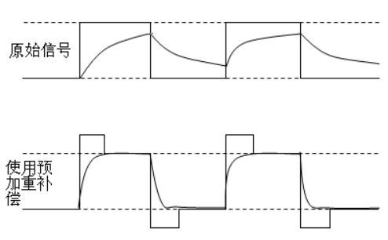
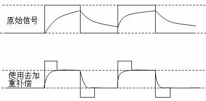
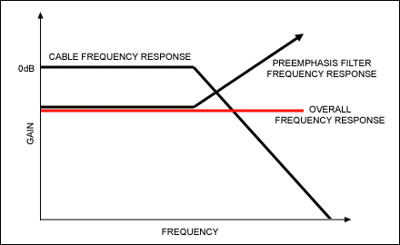
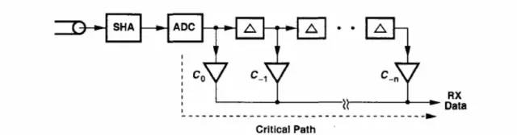
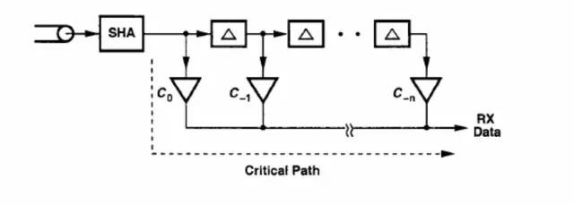
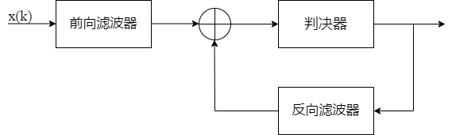

SerDes_PMA
本文最后更新于：2023年12月20日 晚上
1. 预加重电路
- 预加重是一种在发射端对信号的高频分量进行补偿的信号处理方式。
- 信号传输线表现出来的是低通滤波特性，随着信号传输速率提高，高频信号在传输过程中受损很大，为了接收端能够采样到正确的信号，需要TX端在信号发送前进行预加重处理。
- 至于为什么信号传输线表现出来是低通滤波特性，可以看这篇文章。主要是介质损耗和趋肤效应导致的。
- 信号传输线表现出来的是低通滤波特性，随着信号传输速率提高，高频信号在传输过程中受损很大，为了接收端能够采样到正确的信号，需要TX端在信号发送前进行预加重处理。
- 方波信号是多个不同频率下的正弦/余弦信号叠加的结果，高频的正弦/余弦信号主要体现在方波信号的上升/下降的transition上。
- 如下图所示，预加重补偿实际上就是在信号的上升/下降沿处增加幅度，其它幅度保持不变。
- 可以在发送端增加一个高通滤波器，放大信号高频成分的幅值。
- 预加重电路会导致功耗增加以及电磁兼容 (EMC) 增加。

- 去加重电路
- 与预加重有些相似，区别在于：其保持信号上升和下降沿处的幅度不变，其它位置信号幅值减小。
- 相当于加了一个低通滤波效果，并减小低频部分的幅值，高频部分不变。
- 去加重补偿后的信号摆幅 较 预加重电路的要小，眼图高度低，信号更容易收到噪声的影响；但功耗以及EMC更低。
- 与预加重有些相似，区别在于：其保持信号上升和下降沿处的幅度不变，其它位置信号幅值减小。

2. 均衡电路
均衡电路主要是为了补偿信道的非理想性，消除码间干扰(ISI)。
均衡电路 表现为高通滤波器。
- 从频域上理解，均衡是通过高通滤波器补偿信道的低通特性；使得频谱尽可能平坦。如下图。
- 从时域上理解，均衡是对脉冲信号重新塑形，使其上升下降沿transition尽可能小。

均衡器主要有以下几种
- （1）连续时间线性均衡（CTLE）
- （2）前向反馈均衡（FFE）
- （3）判决反馈均衡（DFE）
对于Tx，一般采用 FFE 结构。
- 因为发射端处理的是离散信号，可以采用 数字FIR 滤波器实现。
- 若考虑到低功耗，那么可以采用上面的去加重电路实现；否则采用预加重电路实现。
对于Rx，一般采用 CTLE/DFE。
对于RX，也可以采用 数字FIR滤波器 实现，但是考虑到发射出的离散信号经过有损信号后出现扭曲，需要使用采样保持放大器(SHA)对信号进行重新采样，之后再ADC转换为数字信号。再过数字FIR滤波器。
- 但是其存在瓶颈，如下。
- SHA以及ADC所在的关键路径限制了滤波器的工作速度；即使移相技术和并行技术可以减轻速度的瓶颈，但波特率也被限制在1Gbps内。
- ADC若想达到GHz量级，那么ADC将消耗大量的功耗和面积。

- 但是其存在瓶颈，如下。
如果使用 模拟FIR滤波器，因为相较于数字FIR滤波器少了ADC模块，因此可能做到低功耗高速度。
- 但是其亦存在瓶颈，如下。
- 速度同样被SHA所在的关键路径限制。
- 延迟线的传输速率与带宽有关，在传输速率十分高时，信号衰减严重。
- 其中延迟线路可以由DLL/PLL实现，但是对于很高速率的数据传输，这个延时要求十分精确，对DLL/PLL也是一个挑战。

- 但是其亦存在瓶颈，如下。
CTLE（连续时间线性均衡）
- 根据 这篇文章
对CTLE频率响应曲线的分析，可以看到，低频时增益衰减值几乎为常数，随着频率不断升高，增益衰减逐渐变小，但是过了某个频率点后，衰减值又开始慢慢变大。
- 我们利用的频端是前面这部分，因此在起作用的频端中，可以看到CTLE是一个高通滤波器。
- CTLE 可以通过有源/无源两种方式实现，实现的效果都是降低信号低频幅值/提升信号高频幅值，从而提高通道的带宽。
- 根据 这篇文章
对CTLE频率响应曲线的分析，可以看到，低频时增益衰减值几乎为常数，随着频率不断升高，增益衰减逐渐变小，但是过了某个频率点后，衰减值又开始慢慢变大。
DFE（判决反馈均衡）
- 包括两个延迟滤波器：前向滤波器以及反向滤波器。
- 其中反向滤波器的输入是前向滤波器+判决器输出后的结果。反向滤波器的系数可以通过调整来抵消ISI。

- 缺点
- 太依赖于之前信号的判决，可能导致误差传播，处理速度变慢。
- 包括两个延迟滤波器：前向滤波器以及反向滤波器。
3. 串并转换电路
4. 时钟恢复电路(CDR)
SerDes_PMA
http://binbinqian.cn/2023/12/20/SerDes_PMA/